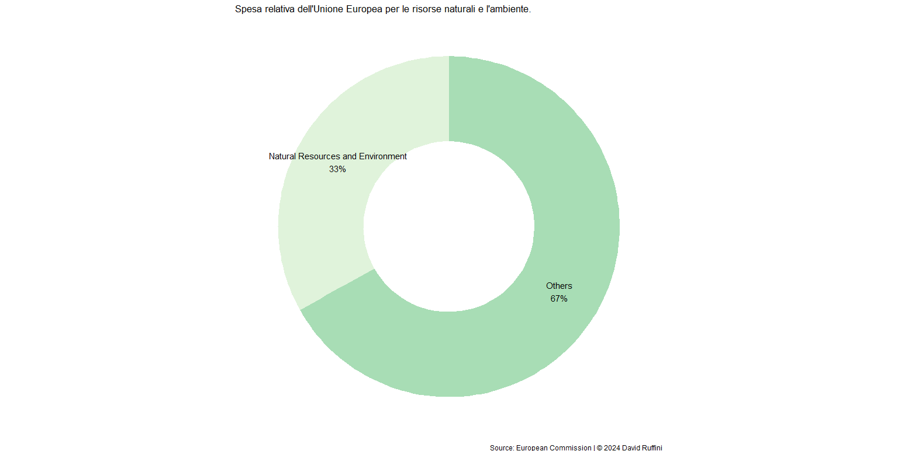
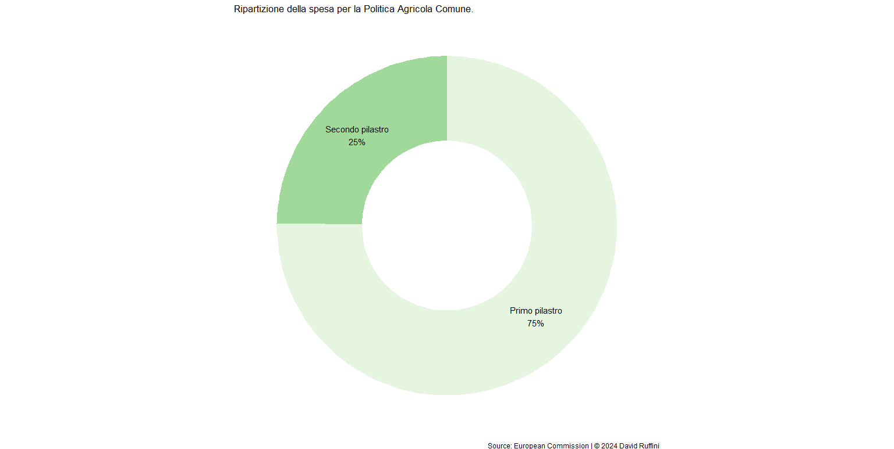

La rivolta degli agricoltori e le sue contraddittorietà
Tra il dicembre del 2023 e il gennaio del 2024 in svariati Paesi dell’Unione Europea gli agricoltori hanno iniziato a protestare accusando la stessa Unione. I tumulti presentano però una doppia scala, prima europea e poi nazionale: se da un lato il nemico comune è la politica del Green Deal, dall’altro ogni Stato vede le proprie rivolte indirizzate anche ad altri obiettivi.
L’Unione Europea si è posta un obiettivo importante: raggiungere la neutralità climatica entro il 2050. Per farlo ha dato il via a un pacchetto di mosse da realizzare per condurre i Paesi membri sulla strada verso la transizione verde. L’agricoltura partecipa al 25% del riscaldamento climatico totale e, di conseguenza, le nuove regole hanno dovuto legiferare anche su questo settore. I fini delle nuove norme sono garantire la sicurezza alimentare anche in presenza di incertezze di vario tipo, ridurre l’inquinamento del sistema alimentare e imporre una sostenibilità competitiva a livello globale.
L’Unione ha sempre avuto voce in capitolo quando si tratta di agricoltura e a ben vedere; infatti, attraverso la Politica Agricola Comune, un terzo del bilancio UE viene speso a sostegno degli agricoltori. La Politica è un insieme di leggi, aggiornate ogni cinque anni, che vuole unificare le regole in materia di agricoltura dei Paesi membri e si compone di due pilastri.

Percentuale spesa dall'Unione Europea per le risorse naturali e l'ambiente.
Il primo pilastro si occupa di sostegno diretto, quindi gli agricoltori ricevono dei fondi per gestire la loro attività, rispettando le norme in materia di sicurezza alimentare, ambientale e di benessere degli animali e in modo che i produttori reagiscano agli stimoli del mercato, producendo ciò che i consumatori richiedono; coloro che non rispettano le richieste riceveranno meno sussidi o non ne riceveranno affatto. Appartiene al primo pilastro anche l’obiettivo di bilanciare i prezzi dei mercati agricoli dell’Unione Europea.
Il secondo pilastro ha il ruolo di sviluppare le aree rurali, che rappresentano la metà dell’Europa e sono abitate da circa il 20% della popolazione dell’Unione Europea. Nella maggior parte delle aree rurali il Prodotto Interno Lordo pro-capite è molto inferiore alla media europea e il compito di questo pilastro è modernizzare le aziende agricole, investire nei servizi di base, migliorarne la vitalità e diffondere tecnologia e innovazione.

Percentuale del primo e secondo pilastro sull'intera Politica Agricola Comune.
Nel 2023 la Politica Agricola Comune è stata riformata, adattandola ai piani del Green Deal, indirizzando i suoi aiuti maggiormente verso le piccole aziende agricole e offrendo più potere a ciascun Stato membro sull’adattamento delle misure previste. Quindi contro cosa stanno marciando i trattori europei?
Lo spettro che si aggira per l’Europa è chiaramente quello del Green Deal: gli agricoltori sostengono che il pacchetto di misure renderà il mercato europeo meno competitivo, mercato in cui il grano ucraino, viste le agevolazioni concesse a Kiev, fa abbastanza da padrone. Un’altra, nuova, norma che per ora i protestanti non vogliono rispettare è quella che prevede di lasciare a riposo il 4% dei terreni se si vuole continuare a ricevere finanziamenti comunitari.
E gli italiani? Il Coordinamento nazionale riscatto agricolo (CNRA) ha pubblicato un manifesto dove presenta i dieci punti chiave delle proteste portate avanti nello Stivale. Alcuni di essi vanno contro la riforma della Politica Agricola Comune vista precedentemente, mentre altri riguardano la tassazione nazionale, l’Imposta sul Valore Aggiunto e il “no” alla carne sintetica. Su quest’ultimo punto la Confederazione Nazionale Coltivatori Diretti (COLDIRETTI) ha costruito una vera e propria battaglia ideologica basata sulla disinformazione, ma che ha comunque raccolto un numero notevole di sostenitori nella politica italiana.
Riguardo la carne sintetica è opportuno far notare l’intreccio che si crea tra il voler mantenere lo status quo da parte degli agricoltori e l’amore per il cibo italiano del ministro Lollobrigida: se i primi, nel Manifesto, sostengono che sono necessari “regolamenti stringenti che contrastino l’ingresso sul mercato di cibi sintetici”, allora il secondo li precede. Infatti, a novembre il parlamento ha vietato la produzione e la vendita di prodotti sintetici in Italia. Divieto eliminato successivamente dalla Commissione Europea per un vizio di forma, ma che comunque ricorda al parlamento italiano a quale organo appartiene la decisione ultima su cosa vendere e produrre in Italia.
La rivolta sta ottenendo le prime “vittorie”: l’obbligo di lasciare il 4% di terra a riposo è stato derogato, la proposta di ridurre l’uso di insetticidi e repellenti respinta e l’idea di trattare le emissioni degli allevamenti intensivi al pari degli stabilimenti industriali bocciata. In Italia, inoltre, si sta protestando anche per problemi che hanno solamente i colleghi europei: Francia e Germania discutevano di togliere le agevolazioni fiscali per l’acquisto del gasolio, mentre in Italia l’argomento non è mai stato affrontato.
Il mercato dell’agricoltura è complesso, sottoposto a rischi e di conseguenza a prezzi volatili. Tra il laissez-faire di considerare gli agricoltori al pari di qualsiasi altro imprenditore, e quindi sottoposti alle rigide leggi del mercato, e un’economia interamente pianificata dov’è lo Stato a organizzare la produzione, c’è una via di mezzo che l’Unione Europea sta cercando di realizzare. Il budget europeo speso a sostegno del settore agricolo è il 31% del totale, somma che però non viene redistribuita in maniera corretta e impedisce a molti agricoltori di ottenere i fondi necessari per lavorare e vivere serenamente.
Ciao!
Mi chiamo David, sono uno studente di Statistica e in questo sito raccoglierò le mie analisi su argomenti che trovo di mio interesse.
I motivi principali che mi hanno spinto a pubblicare le mie ricerche sono il voler dare ordine a ciò che prima vagava solamente tra le cartelle del desktop e condividere con gli altri i risultati delle suddette indagini.
Se siete in disaccordo, riconoscete un mio errore o per qualsiasi altro motivo volete scrivermi, potete contattarmi nei canali che ho messo in fondo alla pagina.